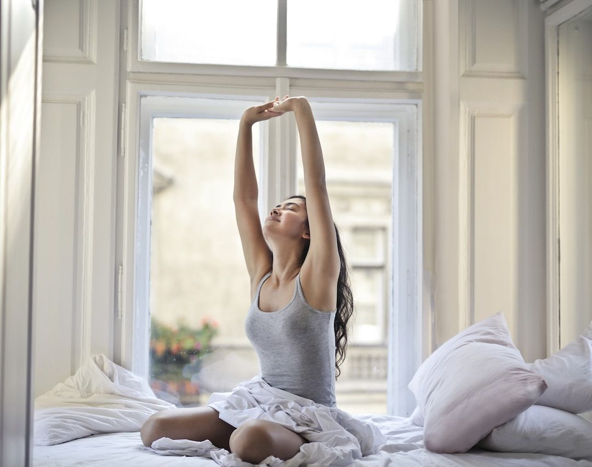

Answers · Everyday nervous system resets
The Benefits of a Morning Stretch, and Why I Do Mine in the Sunshine
Have you ever crawled out of bed and felt like your body was still hitting snooze? Most of us have, and the fix is simpler than another cup of coffee. A few minutes of stretching, ideally in the morning light, is one of the kindest ways I know to start your day with more energy and more intention.

Why you feel so tired when you first wake up
After hours of lying still, your body has been resting in one position all night, and a lot of that morning heaviness has less to do with being tired and more to do with being stagnant. Gentle stretching gets you moving again, so your muscles and joints loosen up before the day asks anything of them.
What a morning stretch does for you
- Better flexibility. Harvard Health notes that regular stretching keeps your muscles flexible and your joints moving through their full range, which makes everyday movement easier at any age.
- A calmer start. When I pair slow stretches with deep breathing, I start the day settled instead of rushing straight into stress mode.
- More energy. A few minutes of movement wakes up both your body and your mind, and that alertness tends to carry through my morning.
Why I stretch in the sunshine
Light is the main signal your body uses to keep its internal clock in step with the day, as a 2019 review of light and circadian rhythms in Somnologie explains. Getting natural light early helps your body know when to feel awake and, later, when to feel sleepy. When you stretch by a sunny window or out on the grass, you get both benefits at once: your body wakes up through movement while your body clock gets its cue from the light.
A five-minute sunrise stretch
- Reach. Stand or sit tall, breathe in and reach both arms overhead, then breathe out and let them float down. Repeat three times.
- Side bend. Reach your right arm up and over to the left, hold for three breaths, then switch sides.
- Fold. Bend your knees generously and fold forward, letting your head and arms hang heavy for five breaths.
- Open your chest. Clasp your hands behind your back, lift your heart toward the light and breathe deeply.
- Twist. Seated or standing, turn gently to each side, letting your breath lead the movement.
Take it slowly and stay well inside what feels good; this is about waking up, not pushing.
Keep exploring
- Why does making your bed change your day?
- How can morning journaling change my day?
- What are the benefits of morning meditation?
Common questions
Is it good to stretch first thing in the morning?
Yes, as long as you keep it gentle. Slow stretches with deep breathing feel much better first thing than deep or bouncing ones, and if you have a health condition, check with your doctor before starting something new.
How long should a morning stretch take?
Five minutes is plenty to feel the difference. You can always add more on days when you have time.
Why stretch in the sunshine?
Light is the main signal for your body clock, and stretching wakes up your body, so doing them together is a lovely way to feel awake in the morning and ready for sleep at night.
Sources
- Harvard Health Publishing, Harvard Medical School (updated regularly). Why should you stretch?. Harvard Health.
- Blume, C., Garbazza, C., & Spitschan, M. (2019). Effects of light on human circadian rhythms, sleep and mood. Somnologie.
This article is for education and everyday wellbeing; it isn't medical advice. If you're struggling with your sleep, mood or health, please talk with a licensed professional. Keep reading: all answers · the free community · about Tamara Rose